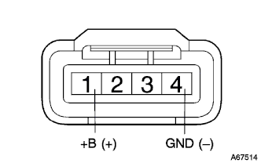
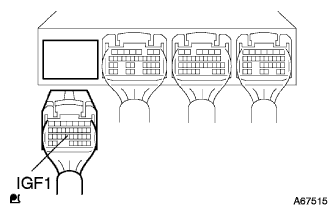
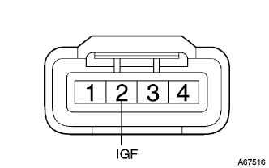
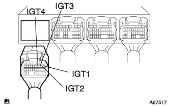
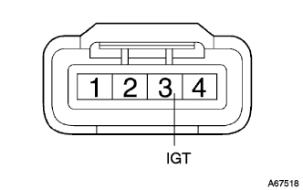

DTC P1300/14 イグナイタ1系統 |
DTC P1305/15 イグナイタ2系統 |
DTC P1310/14 イグナイタ3系統 |
DTC P1315/15 イグナイタ4系統 |
| DTC No. | DTC検出条件
| 点検部位 |
| P1300/14 |
|
|
| P1305/15 |
|
|
| P1310/14 |
|
|
| P1315/15 |
|
|
| 手順1 | ワイヤハーネスまたはコネクター点検（電源回路） |
|  |
イグニッションコイルのコネクタを切り離す
イグニッションスイッチをONにする。
SST(トヨタエレクトリカルテスター)を使用して、イグニッションコイルの車両側コネクタ端子間の電圧を点検する。
| 測定端子(端子名) | 基準値 |
| 1(+B)←→4(GND) | 10-14V |
|
| ||||
| OK | |
| 手順2 | ワイヤハーネスまたはコネクター点検（エンジンコントロールコンピユータ-イグニツシヨンコイルASSY） |
|  |
エンジンコントロールコンピユータのコネクタAおよびイグニッションコイルのコネクタを切り離す。
|  |
SST(トヨタエレクトリカルテスター()を使用して、エンジンコントロールコンピユータの車両側コネクタ←→イグニッションコイルの車両側コネクタ間の導通および短絡を点検する。(端子配列は参照)
| 測定端子(端子名) エンジンコントロールコンピユータ←→イグニッションコイル | 基準 |
| A23(IGF1)←→2(IGF) | 導通があり他の端子間およびボデーアース間と短絡がないこと |
|
| ||||
| OK | |
| 手順3 | ワイヤハーネスまたはコネクター点検（エンジンコントロールコンピユータ-イグニツシヨンコイルASSY） |
|  |
エンジンコントロールコンピユータのコネクタAおよび各シリンダのイグニッションコイルのコネクタを切り離す。
|  |
SST(トヨタエレクトリカルテスター)を使用して、エンジンコントロールコンピユータの車両側コネクタ←→各シリンダのイグニッションコイルの車両側コネクタ間の導通および短絡を点検する。(端子配列は参照)
| 測定端子(端子名) エンジンコントロールコンピユータ←→イグニッションコイル | 基準 |
| A8(IGT1)←→3(IGT) | 導通があり他の端子間およびボデーアース間と短絡がないこと |
|
| ||||
| OK | |
| 手順4 | シュミレーションテスト実施 |
ダイアグノーシスコードを消去する。
イグニッションコイルの配置を変える。
走行テストを実施する。
ダイアグノーシスコードを確認する。
| A | B |
| ダイアグノーシスコードに変化がない | イグナイタ系統の異なるダイアグノーシスコードが出力された |
|
| ||||
| A | ||
| ||